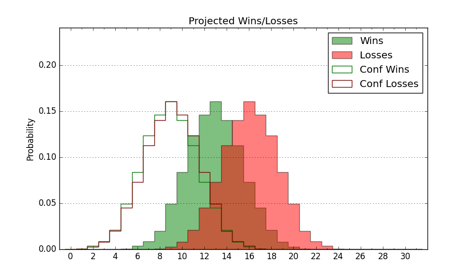

| Home | Game Probabilities | Conferences | Preseason Predictions | Odds Charts | NCAA Tournament |
| City: | Portland, Oregon | |
| Conference: | Big Sky (1st)
| |
| Record: | 0-0 (Conf) 4-7 (Overall) | |
| Ratings: | Comp.: -4.2 (224th) Net: -2.0 (192nd) Off: 104.8 (118th) Def: 106.8 (276th) SoR: 0.2 (191st) |
| Remaining | ||||||
|---|---|---|---|---|---|---|
| Date | Opponent | Win Prob | Pred. | |||
| 12/31 | @ Sacramento St. (214) | 34.1% | L 71-76 | |||
| 1/5 | @ Eastern Washington (197) | 31.3% | L 75-81 | |||
| 1/7 | @ Idaho (268) | 45.7% | L 79-80 | |||
| 1/12 | Northern Arizona (255) | 71.6% | W 82-75 | |||
| 1/14 | Northern Colorado (220) | 64.5% | W 86-81 | |||
| 1/19 | @ Weber St. (216) | 34.3% | L 72-77 | |||
| 1/21 | @ Idaho St. (271) | 46.2% | L 73-74 | |||
| 1/26 | Montana St. (127) | 45.7% | L 75-76 | |||
| 1/28 | Montana (171) | 56.6% | W 77-75 | |||
| 2/2 | Idaho (268) | 74.1% | W 83-76 | |||
| 2/4 | Eastern Washington (197) | 60.8% | W 80-77 | |||
| 2/9 | @ Northern Colorado (220) | 34.8% | L 81-86 | |||
| 2/11 | @ Northern Arizona (255) | 42.5% | L 78-80 | |||
| 2/16 | Idaho St. (271) | 74.5% | W 77-70 | |||
| 2/18 | Weber St. (216) | 64.0% | W 77-72 | |||
| 2/23 | @ Montana (171) | 27.7% | L 73-80 | |||
| 2/25 | @ Montana St. (127) | 19.8% | L 71-81 | |||
| 2/27 | Sacramento St. (214) | 63.8% | W 76-72 | |||
| Previous | Game Score | |||||
| Date | Opponent | Win Prob | Result | Off | Def | Net |
| 11/11 | @Portland (101) | 15.6% | L 91-98 | 14.0 | -10.4 | 3.6 |
| 11/13 | @Seattle (146) | 23.1% | L 71-83 | -4.2 | -4.3 | -8.6 |
| 11/19 | @Oregon St. (207) | 32.3% | W 79-66 | 11.3 | 12.1 | 23.4 |
| 11/25 | (N) Gonzaga (8) | 5.0% | L 78-102 | 13.7 | -14.5 | -0.8 |
| 11/25 | (N) West Virginia (20) | 7.9% | L 71-89 | -0.3 | -2.0 | -2.3 |
| 11/27 | (N) Oregon St. (207) | 46.8% | W 83-71 | 14.5 | 5.8 | 20.3 |
| 12/3 | Air Force (128) | 47.0% | W 68-64 | -2.0 | 9.2 | 7.2 |
| 12/10 | @Cal Poly (258) | 43.7% | L 49-72 | -24.9 | -9.3 | -34.2 |
| 12/13 | @Santa Clara (97) | 15.1% | L 75-78 | 2.7 | 0.7 | 3.4 |
| 12/17 | UC Santa Barbara (95) | 36.1% | L 73-85 | -5.3 | -5.1 | -10.4 |
| 12/22 | @California Baptist (184) | 30.0% | W 74-72 | 4.2 | 11.0 | 15.2 |
| Stats & Trends | |||||
|---|---|---|---|---|---|
| Current | Day | Week | Month | Season | |
| Composite | -4.2 | -0.0 | +1.3 | -1.2 | +7.0 |
| Comp Rank | 224 | -- | +6 | -25 | +79 |
| Net Efficiency | -2.0 | -0.0 | +1.3 | -11.0 | -- |
| Net Rank | 192 | +1 | +20 | -97 | -- |
| Off Efficiency | 104.8 | +0.0 | +0.8 | -6.5 | -- |
| Off Rank | 118 | -- | +10 | -76 | -- |
| Def Efficiency | 106.8 | -0.0 | +0.5 | -4.5 | -- |
| Def Rank | 276 | +1 | +10 | -69 | -- |
| SoS Rank | 17 | -- | -1 | -14 | -- |
| Exp. Wins | 12.9 | -0.0 | +1.2 | -1.8 | +2.7 |
| Exp. Conf Wins | 8.9 | -0.0 | +0.4 | -2.0 | +1.0 |
| Conf Champ Prob | 9.2 | +0.7 | +2.8 | -17.7 | +5.3 |

| Advanced Stats | ||
|---|---|---|
| Stat | Value | Rank |
| Off Eff FG % | 0.499 | 183 |
| Off Ast Ratio | 0.137 | 206 |
| Off ORB% | 0.269 | 177 |
| Off TO Rate | 0.157 | 149 |
| Off FT Ratio | 0.406 | 29 |
| Def Eff FG % | 0.516 | 224 |
| Def Ast Ratio | 0.138 | 160 |
| Def ORB% | 0.337 | 338 |
| Def TO Rate | 0.186 | 59 |
| Def FT Ratio | 0.529 | 361 |